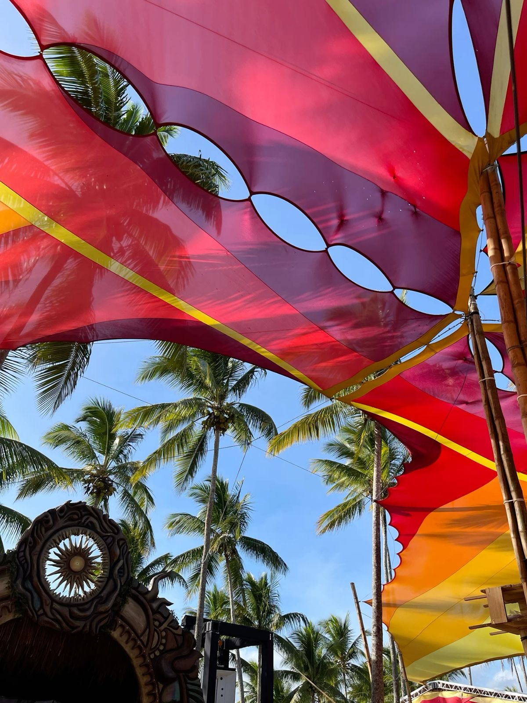
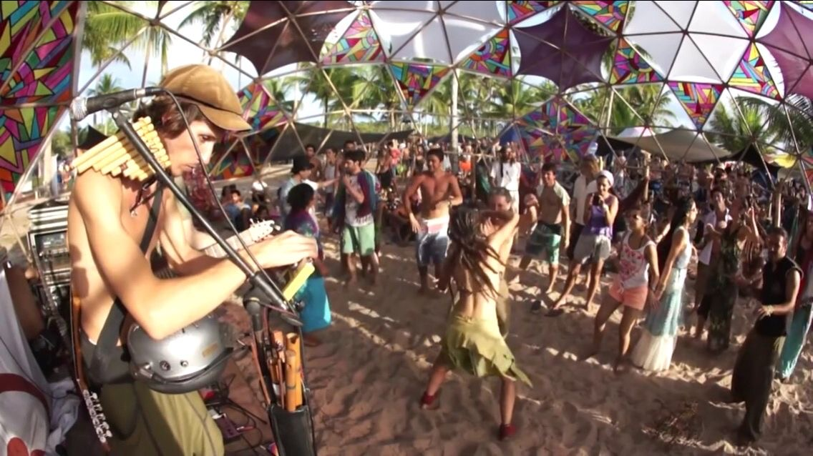
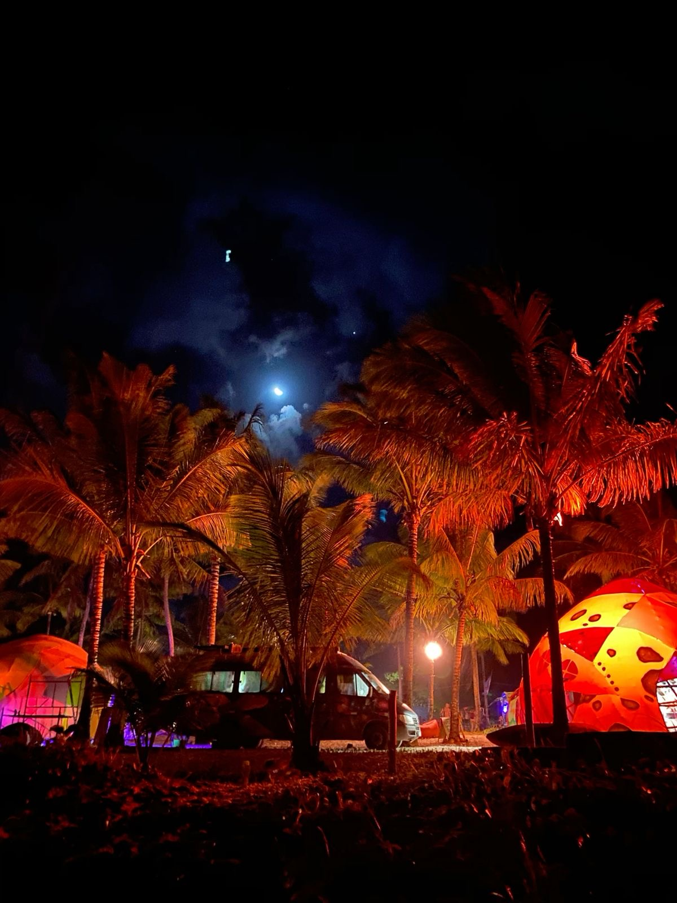

ÄTZØK:**rumo ao chillout do UP
Chillout
stage
27.12 Universo Paralelo, Bahia
ÄTZØK:**rumo ao chillout do UP
Na pista principal é psytrance. No chillout a pista respira.

Downtempo, dub, ambient e música do mundo. Pra deitar na areia, fechar o olho e ouvir com calma.

ÄTZØK:**rumo ao chillout do UP
Eu levo jungle, drum'n'bossa e dub
Nos próximos posts eu conto de onde vem cada um e por que eles se encontram no chillout.
*desliza →